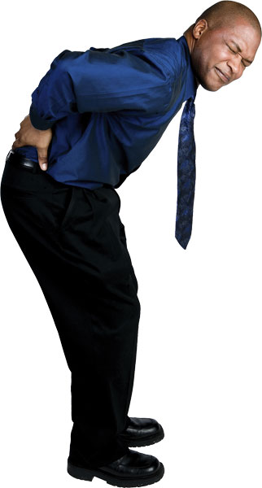
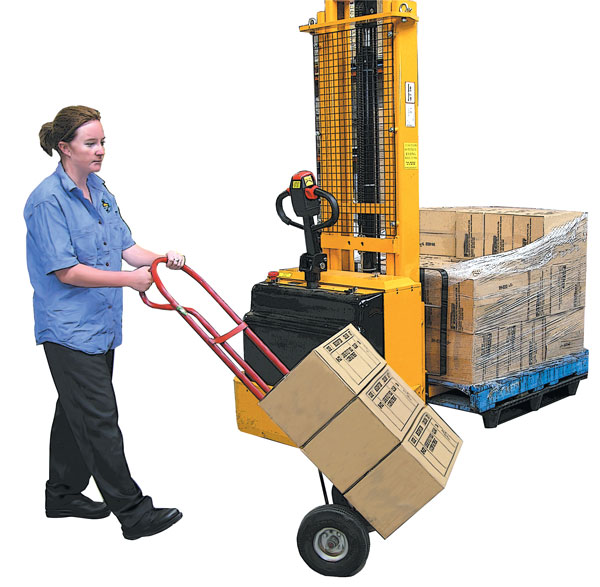
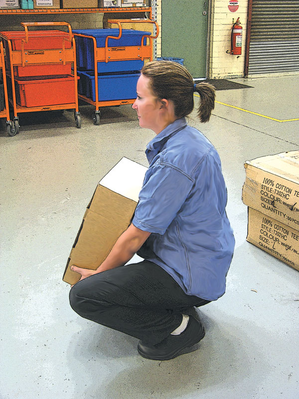
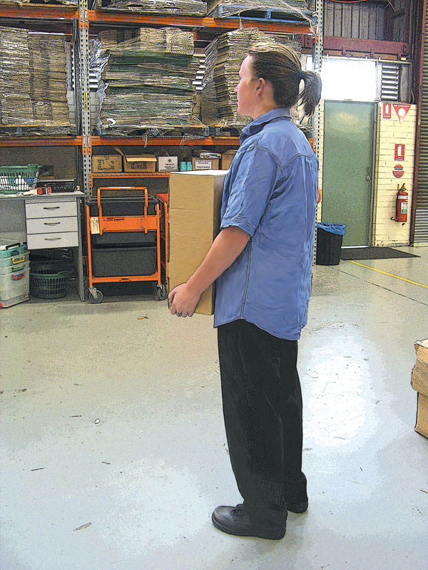

Manual Handling Injuries
Manual Handling Injuries
Back injuries cost the Australian taxpayer, and commercial and industrial interests, many millions of dollars annually. Initial medical costs, and the cost of prolonged rehabilitation of back injury patients, account for the major proportion of industrial insurance payouts. As well as being an expensive injury, an injured back is painful and debilitating. In most cases, the injury was preventable.
The spinal column is a series of interconnected bones, separated by cartilage shock absorbers. Although the spine is flexible, it is not designed to withstand abnormal flexion under load. Lifting weights and carrying loads are normal functions for active humans, however, care must be taken not to exceed the ability of the spine to adequately support this physical activity. When this ability is exceeded, the resultant failure of the spine causes acute and chronic pain, and a reduced capacity to function normally.
It is in everybody's interest, whether employer, employee, or individual, to avoid back injuries by simply 'thinking before lifting'.
Factors associated with back injury
Occupational. Constant manual handling, frequent bending and flexing of the spine, a poor ergonomic workplace, repetitive back movements, all provide a basis for acute injury or chronic complaint.
Personal. Individual strength, age, posture, and degree of fitness are important factors.
Medical/Historical. Previous back complaints, evidence of scoliosis or similar medical conditions, and previous education in back care procedures, will generally, in conjunction with personal factors, dictate the degree of abuse the back can absorb.
The ultimate aim in avoiding back injury is to identify and eliminate potential risks before any injury is sustained. To do this effectively, individuals should identify, assess and control any risk factors.
Identify risk factors by reviewing past procedures and comparing the injury rates. Observe and analyse any existing or potential problems. Consider any personal medical or physical limitations. Consult other individuals or organisations.
Assess the risks involved:
 Is manual handling essential?
Is manual handling essential?
 What options are available?
What options are available?
 Is the right person involved?
Is the right person involved?
Control any risk by reducing the necessity for manual handling by using alternative means of handling, by maintaining a SAFE work or home environment (no slippery floors or obstructions), and especially by educating all those involved in safe lifting techniques.
When lifting or moving a load, consider not only the weight of the object, but its size and shape, the distance it is to be carried, the height it will have to be lifted, and its position prior to lifting. In fact, does it need lifting or will it be better to push or pull the load?
Lifting or moving a load
 consider the load, – size, shape, etc
consider the load, – size, shape, etc
 consider need for mechanical or manual assistance
consider need for mechanical or manual assistance
 position legs apart – one foot level with the load
position legs apart – one foot level with the load
 keep back straight, look up
keep back straight, look up
 bend from the hips, avoid 'twisting' the body
bend from the hips, avoid 'twisting' the body
 tighten the stomach muscles, but don't hold breath
tighten the stomach muscles, but don't hold breath
 BEND THE KNEES
BEND THE KNEES

 lift with the legs, not the back
lift with the legs, not the back

 keep the load close to the body
keep the load close to the body
 keep carrying distance short
keep carrying distance short
 avoid changing grip or 'jerking' the load
avoid changing grip or 'jerking' the load
 deposit the load by bending the knees and keeping the back straight (reverse order of lifting)
deposit the load by bending the knees and keeping the back straight (reverse order of lifting)
 if pulling or pushing, let the legs do the work
if pulling or pushing, let the legs do the work
Pregnant women should take special care when lifting, as their spine adjusts to cater for the physical changes of the body. A pregnant woman's ligaments are also affected by hormonal changes and 'soften' considerably. Any heavily pregnant woman who lifts or carries a heavy, restless, wriggling child is at risk of back injury or worse.